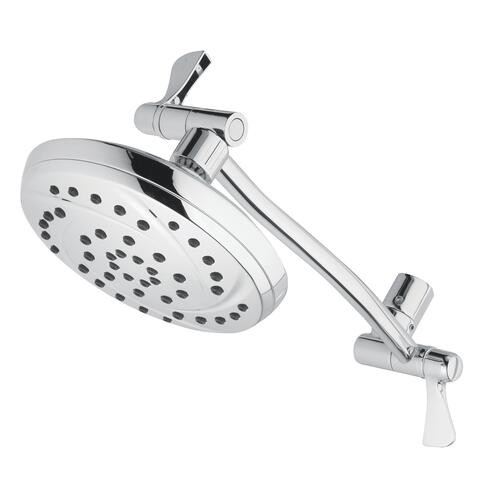
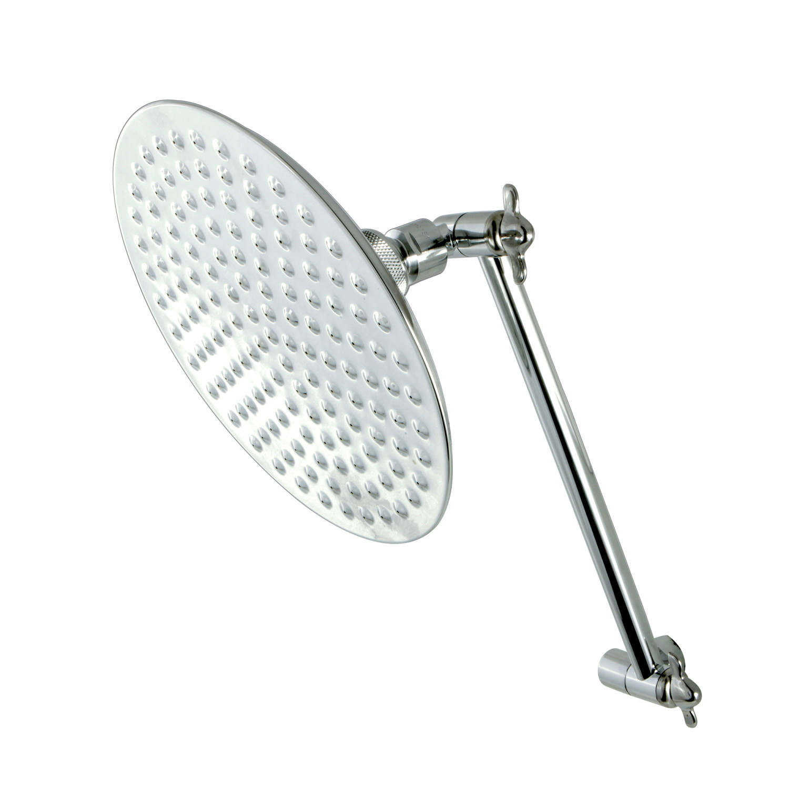
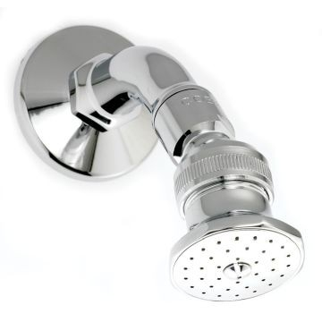
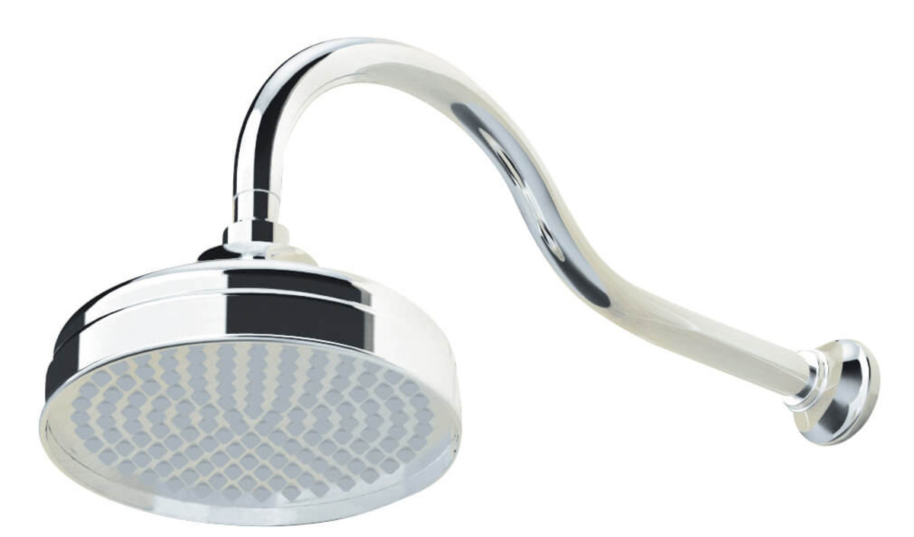

Spending more on a quality shower head ensures the following benefits: Waste Less Water. Getting a quality shower head can reduce the number of gallons of water used on average. Sure, it might be a bit more money upfront, but it'll be worth the savings down the road
   Home